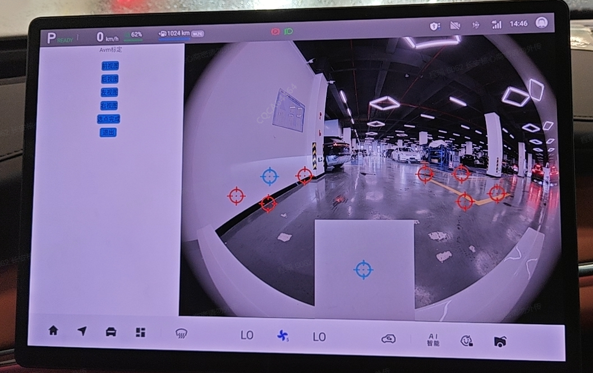
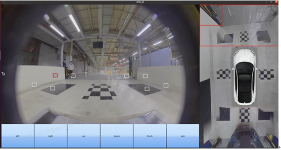

Метод калибровки: войдите в инженерный режим мультимедийной системы.
Шаги калибровки:
1. Войдите в инженерный режим EDC и нажмите приложение послепродажной статической калибровки.

2. При успешном входе в режим калибровки и получении EDC сигнала подтверждения на дисплее отобразится соответствующий интерфейс послепродажной статической калибровки.

3. Нажимайте направления (вперед/назад/влево/вправо) на вид сверху для переключения видов калибровки. Оператор может перемещать точечный курсор с помощью элементов управления на экране мультимедийной системы; при выборе курсора его рамка подсвечивается красным цветом; если расстояние перемещения составляет ≥ 2 cm (TBD), курсор перемещается напрямую методом сдвига; если расстояние перемещения составляет < 2 cm (TBD), данный локальный участок увеличивается с центром в точке нажатия в 2.5 раза (TBD), и в увеличенной зоне можно перемещать курсор; при нажатии вне увеличенной зоны увеличенная зона исчезает; после завершения выбора угловых точек для каждого из четырех направлений обзора мультимедийная система выполняет сохранение.
4. После определения всех угловых точек для всех 4 видов нажмите «Начать калибровку», EDC инициирует запрос на ручную калибровку, завершит калибровку, сформирует новый файл данных калибровки и выдаст результат калибровки.